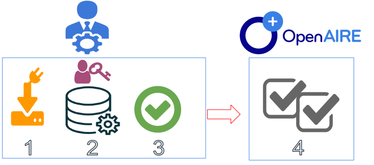

You don't have metrics enabled for this repository yet. Would you like to enable them?

Once you select to enable metrics for your repository, the following steps need to be performed:
On your side
1. Download the tracking code for your repository platform
2. Configure the tracking code according to the instructions
3. Deploy the tracking code in your repository platform
On the OpenAIRE's side
4. Validate the installation of the tracking code and inform the repository manager accordingly
For more details about the workflows and tools please consult the “Guidelines for Collecting Usage Events and Provision of Usage Statistics” .